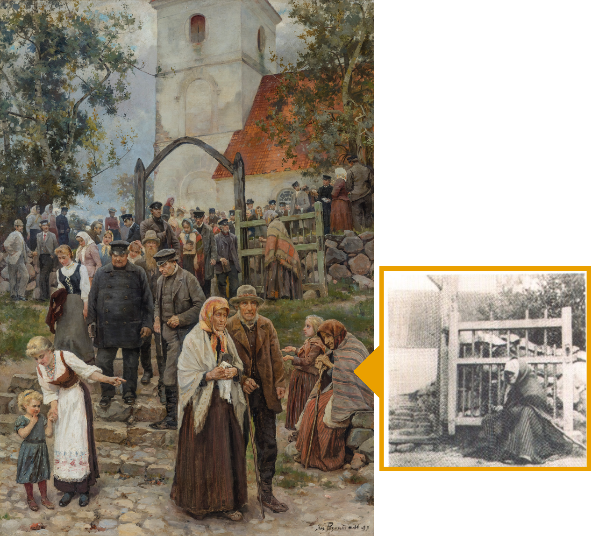

1894. gadā gleznotajā diplomdarbā „No baznīcas” mākslinieks Janis Rozentāls attēlojis tā laika vienkāršos, Saldus miestā mītošos ļaudis. Gleznas oriģināls ir apskatāms Latvijas Nacionālajā mākslas muzejā Rīgā. Gleznā attēlotas ap četrdesmit personu, visas gleznotas no Rozentālam labi zināmiem cilvēkiem. Gleznotājs ir viens no pirmajiem māksliniekiem, kurš fotogrāfē un pēc fotogrāfijas glezno. Gleznas labajā apakšējā stūrī ir redzama kāda vienkārša sieviņa, kuras fotogrāfija arī ir saglabājusies.
Gleznā attēlotas tā saucamās „ļaužu kāpnes” — te no baznīcas nāca visi vienkāršie, parastie šīs puses ļaudis. Otras kāpnes („kungu kāpnes”) iziet uz tagadējo tirgus laukumu.
Pēc saldenieka Štammera atmiņām var mēģināt atšifrēt tā laika konkrētos personāžus.
